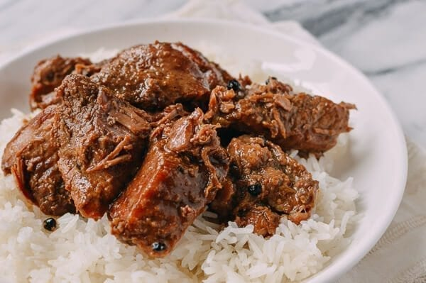

Pork Adobo Recipes

Filipino Pork Adobo
A very tasty food with main the ingredient of pork will be a good experience and taste.
This recipe can be found in the Philippines, but as of these days, it's easy to find because of internet. Many foreign love this recipe, and others use chicken as the main ingredient aside pork.
ingredients
forget about steps, this is just for practice purposes
- 2 tablespoons vegetable oil
- 2 pounds chunks of pork shoulder
- ⅓ cup low sodium soy sauce
- ¼ cup cane vinegar or white vinegar
- 6 clover garlic
- 1 bay leaf
- 2 teaspoons sugar
- 2 teaspoons black peppercorns
- 2 cups water